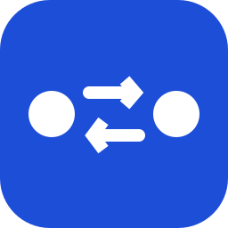
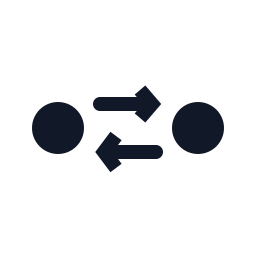
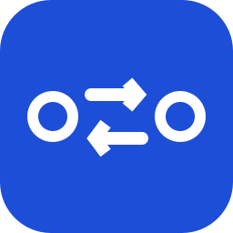
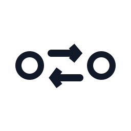
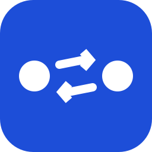

Windows 任务栏 20px · 深色底
构图完全沿用你的原图标：圆角方底 + 两个端点圆 + 上下双向箭头，只调比例关系。
原图标的「箭头贴圆」是几何必然——箭杆起点 M86，而圆右缘是 56+30=86，
净空恰好为 0。所以这一轮只做三件事：让出净空、减轻笔触、收正比例，不换概念。
匀净
Clean
圆 r30→26，箭杆起点 86→100，净空 9px。 箭头从实心块改为 14px 等宽描边，笔触变轻。 保留原版 180° 旋转对称，这是原图标唯一的灵动来源。


16实心 · 改良
Solid, refined
完整保留原图标的实心箭头语言。圆 r30→27，箭杆高 16→14， 箭头 40×40 改 22×36 更修长，起点 86→100 净空 13px。 垂直跨度 44→56，比例由 2.43:1 收到 2.11:1。
 32
32 16
16环点
Ring
端点由实心圆改为 22px 圆环（12px 描边），环内是空的， 两个圆环读起来像两个端口口，语义更贴「两个串口」。 环外缘 86，箭杆起点 100，净空 7px。通透度最高。
 32
32

16斜流
Flow
圆保持严格对称与水平，仅让上下两条箭杆平行倾斜约 11°。 打破死板水平镜像产生流向感，但两线严格平行、整体居中，所以不会歪。 垂直跨度增到 96px，比例收至 2:1。四个里最「灵动」。
 32
32
灰线是圆心水平轴，蓝点是箭杆起点的圆帽中心，红色标注段是两者之间的实际净空。 原图标这一段长度为 0，所以圆和箭头看起来是粘在一起的。
重点看圆与箭头之间的缝隙是否真的存在，以及箭头在小尺寸下是否还认得出。
顺序：V1 / V2 / V3 / V4 / 旧（半透明对照）。